Kenneth Lloyd S.
Becat
Educator
& Technician
About Me
BTVTED student · Major in Automotive Technology at BVS-Colleges
Welcome to my portfolio, where you can learn more about my skills, experiences, and activities.
I’m fascinated by the world’s diversity and the theories that explain it.
I’m also passionate about how technology will shape our future.
Understanding these connections helps me appreciate our past, present, and the possibilities ahead.
HOBBIES
Activities Prelims
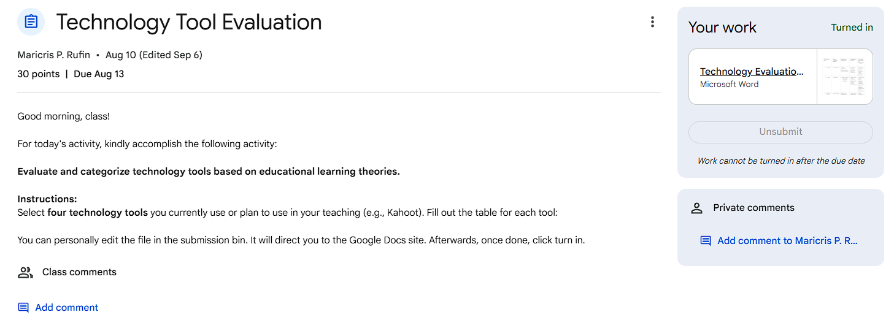
Technology Tool Evaluation
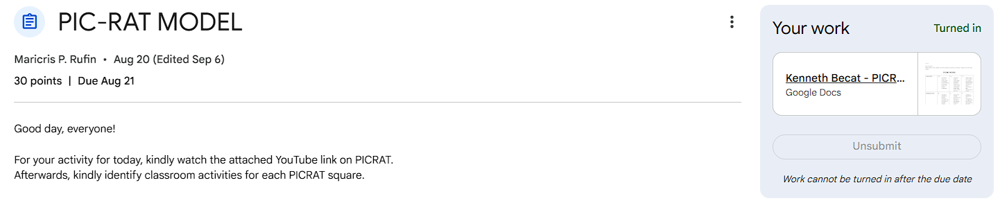
Pic Rat Model
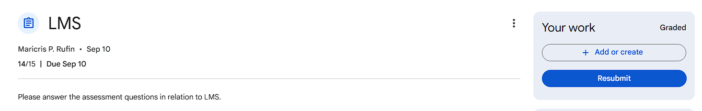
LMS Online Quiz
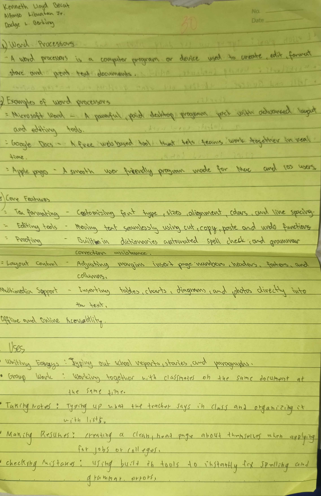
Word Processors Features
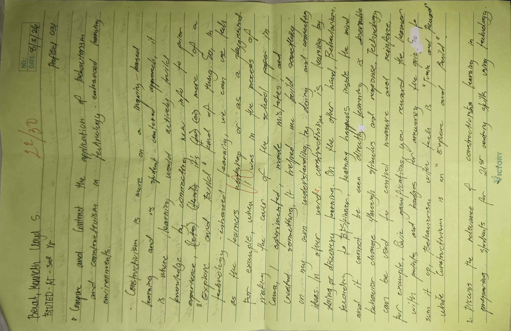
Behaviorism and Constructivism
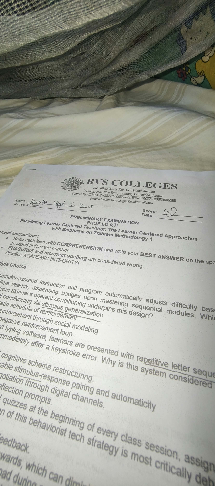
Prelims Examination
Reflection:
Looking back at our prelims, it was honestly a pretty wild start to the semester. Since it was still the beginning of the term, I wasn't really familiar with the subject yet, so I had to figure things out as I went—though I'm glad I somehow managed to pull it off. To make things even more challenging, the weather wasn't very gentle on us with the typhoons hitting, which forced us to shift to online learning. Adjusting to the sudden setup wasn't always easy, but overall, it still turned out to be a genuinely fun and memorable learning experience.
Activities Midterms
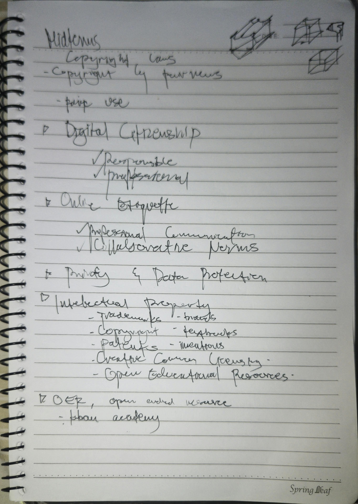
Midterm Notes
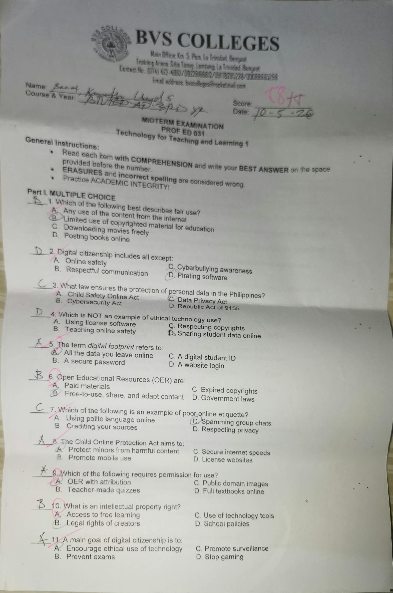
Midterm Examination
Reflection:
Midterms honestly went by so fast I barely even noticed. That period kicked off the start of our group reportings, which definitely kept everyone busy and on their toes. The unfortunate part, though, was realizing I somehow lost all my quiz papers, leaving me with only two left to hold onto. Looking back, it was a bit chaotic, so it's a solid reminder to keep my papers organized—even when the semester moves at lightning speed.
Activities Finals
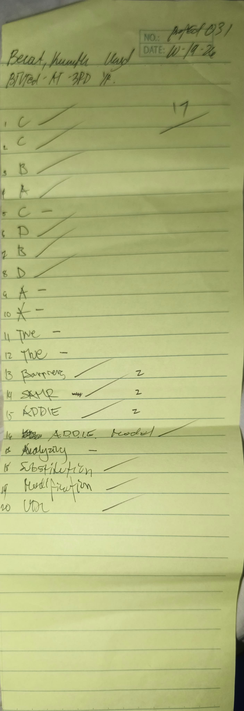
Aviles Group Quiz
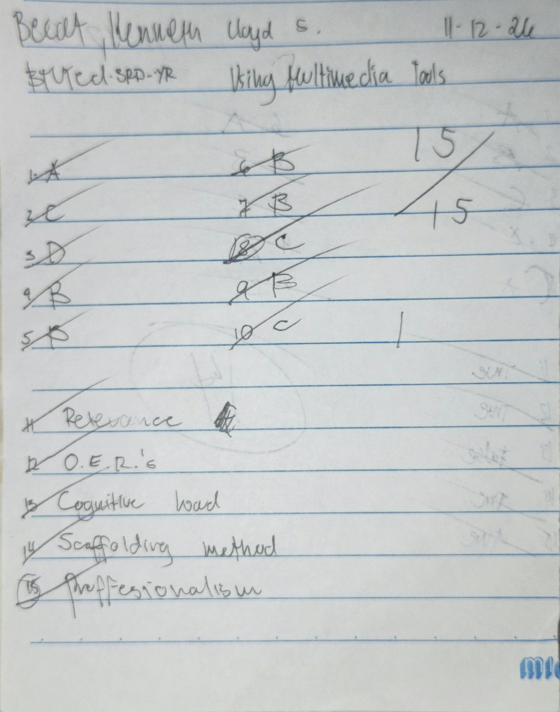
Gomintong Quiz
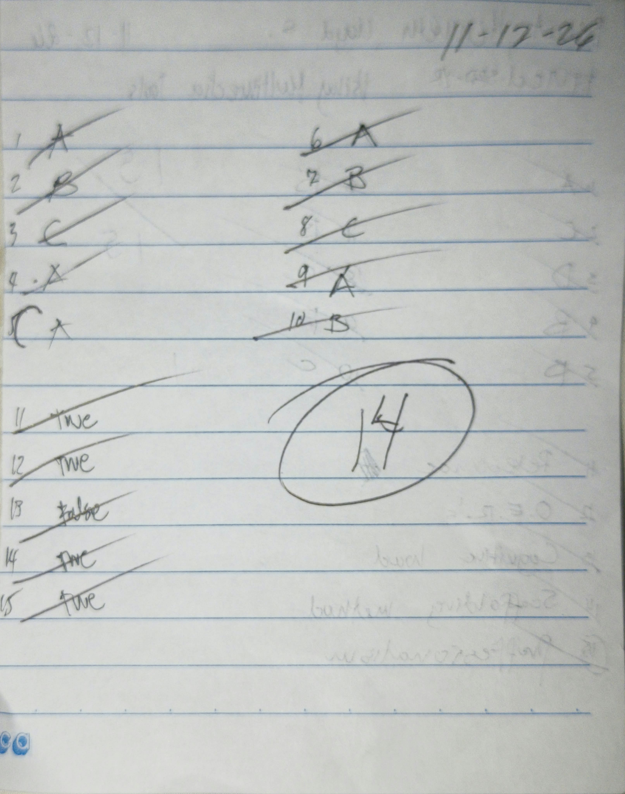
Mangsi Group Quiz
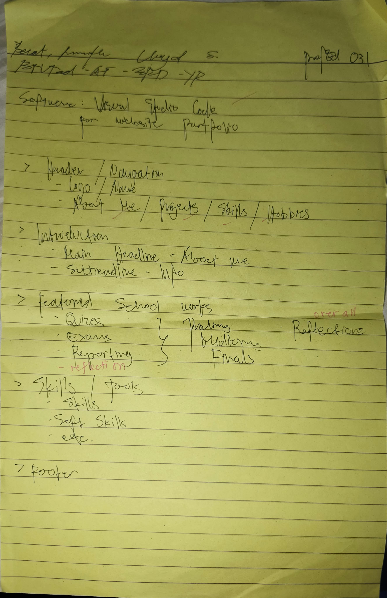
Portfolio Drafting
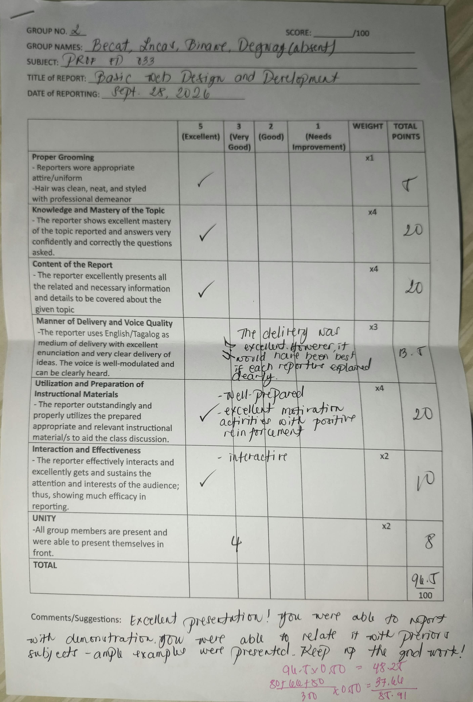
Group Reporting Feedback
Reflection:
Finals was easily the busiest stretch of the entire semester. Between school programs, campus activities, and organization responsibilities, I felt like I was constantly juggling a million things at once. It was honestly exhausting trying to keep up with everything, especially on top of academic requirements, pero ganon talaga ang buhay—you just push through and figure it out as you go. One of the highlights for me, though, was reading through the feedback from our report; I genuinely enjoyed going over everyone's thoughts and took all the comments to heart as a guide for my future improvements. Looking back, even though the whole period drained my energy, I’m glad I somehow managed to survive it all and prove to myself that I can handle the pressure.

Portfolio Making Using Visual Studio Code
AI helped me a lot along the way. It cleaned up my code, explained why things broke, and suggested improvements such as a layout that fits phones and laptops, better accessibility, and a more modern look. I learned the most when I asked why something wasn’t working and tried the fix myself, instead of only copying the code.Overall, this project made me more confident with web development. I still need to check and understand what the AI gives me, because the ideas and the final decisions about the content should be mine. I’m proud that this portfolio shows my activities, my hobbies, and my goal of becoming a future educator and technician.
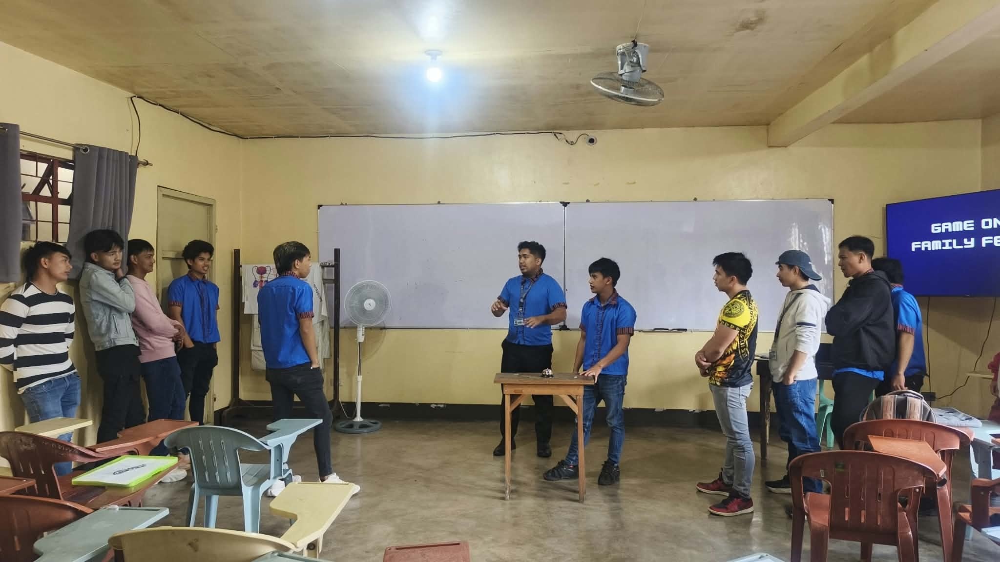
Teaching Demo
Having a background in web development really helped me out during my teaching demo on basic web design. Since I'm already comfortable with HTML and CSS, I didn't have to stress over the technical stuff and could just focus on actually teaching and keeping the class engaged. It felt great being able to answer questions on the spot. Looking back, though, I realized I should have discussed the lesson more thoroughly with my group mates beforehand so we were all completely on the same page. Even so, it was a really fun and rewarding experience that taught me a lot about both teaching and teamwork.
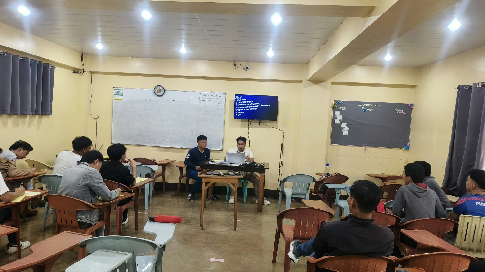
Quiz and Game
Funny enough, our initial motivation activity totally flopped because I used a limited Family Feud-style site, which forced us to skip ahead and reschedule for another day. When we finally ran it, though, we somehow pulled it off—everyone had a blast, and seeing everyone get high scores on the quiz showed me that my classmates were actually listening to our report.